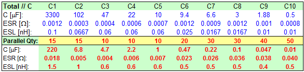
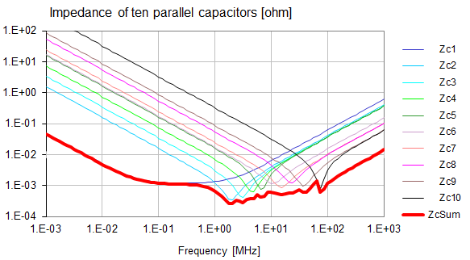

Recipe for 1 Volt, 40 Amp step application
Example 1
Tantalum Bulk C default capacitors for a single UHC4 / UHC4T supply with 1 V and 40 A transients (Max Current Transient = 100 %) with 10% Voltage ripple.
Steps 1 to 3 provide
- max ESR = 1.25 mΩ (Milli-Ohm),
- min Bulk C = 2906 µF, and
- max Ceramics = 294 µF


Note The design is scalable. For higher current applications, multiply
the quantities of each capacitor type by the scaling factor. Similarly, for ganged higher
current supply channels, multiply the quantities of each capacitor type by the number of ganged
UHC4 supplies.
Note To be able to place additional capacitors during fine
tuning, add several differently sized un-populated capacitor pad banks in the area around the
DUT.
Functional changes
- Introduced in SmarTest 7.2.1